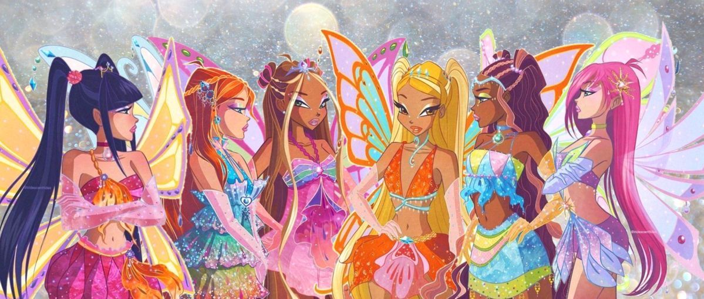

O começo das Winx ✨
Winx Club é uma animação italiana criada por Iginio Straffi e lançada em 2004.
🧚♀️ Winx
VOCÊ SABIA?
Descubra algumas curiosidades sobre o universo das Winx e suas personagens.

01
Winx Club é uma animação italiana criada por Iginio Straffi e lançada em 2004.
02
Alfea é a escola onde Bloom e suas amigas estudam magia e aprendem a desenvolver seus poderes de fada.
03
Ao longo da história, as Winx conquistam diferentes transformações mágicas, aumentando seus poderes e habilidades.
04
Cada fada possui uma habilidade diferente: Bloom domina o fogo, Flora a natureza, Musa a música, Tecna a tecnologia, Stella a luz e Aisha a água.